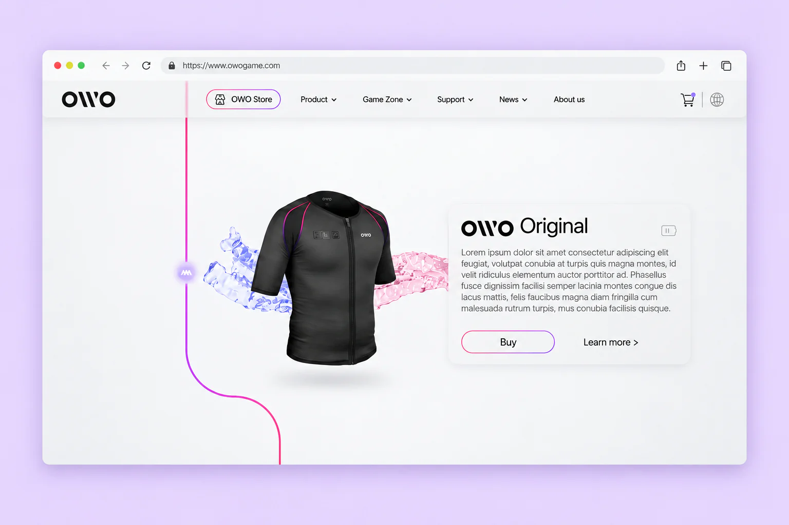

Let the jacket lead
The product occupies the centre of the composition, paired with a concise information panel.
OWO Website
A website design proposal for OWO, exploring how to present the haptic jacket through a light product-focused interface and a distinctive visual path.

Haptic technology is experienced through the body. The design explores how to introduce that physical product on a screen and give the jacket a clear focal point.
The product occupies the centre of the composition, paired with a concise information panel.
A thin pink-to-purple line connects the page composition, bringing the brand’s colour into a restrained, light environment.
Product details, shopping and supporting navigation are presented around the core product story.
This work remained a design proposal. The website was not developed or launched.